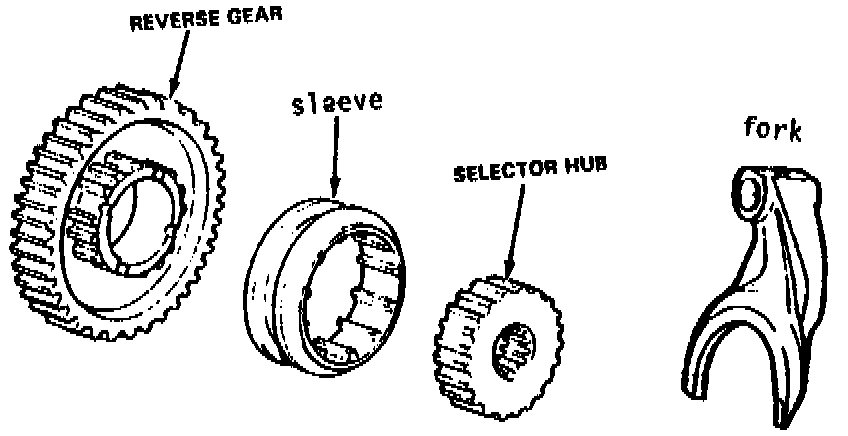

A/T - Park, Reverse, or Neutral Clunk/Ratcheting Noise
TSB 87-72 (Dec)SUBJECT: HONDA
HONDAMATIC 2-3-4 SPEED
COMPLAINT:
Bang - clunk, or ratcheting sound on Park, Reverse, or Neutral
CAUSE:
The reverse servo slams on, and bends the reverse fork, which only contacts on two points.
When the fork is bent, it cocks the selector sleeve and the teeth do not engage evenly.
CORRECTION:
Look carefully at the selector sleeve and gear teeth. If they are shiny and slightly rounded --
REPLACE THEM
Honda transmissions have a very low tolerance for wear on their reverse components.

Normally, the procedure is to replace the fork, hub, sleeve and gear.